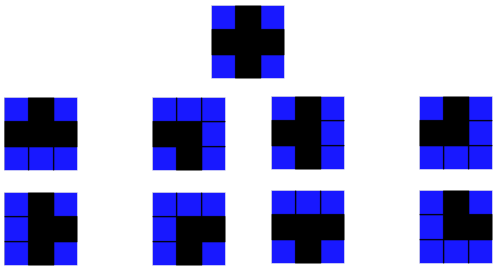

Fonctionnement actuel de la création du terrain
Le terrain est généré à chaque début de partie d'une manière semi-aleatoire.
Nous avons choisi ce fonctionnement de création de terrain, car il permet d'obtenir un terrain unique et nouveau à chaque partie. Le mode semi-aleatoire permet d’assurer un terrain resolvable et jouable.
Le terrain de jeux est composé de 24 cases sur 24 cases. J'ai donc créé différents modèles de chemin de 3 cases de hauteurs sur 3 cases de longueur.
Pour générer l'apparition de ces blocs, j'ai utilisé deux boucles " For " imbriqués. Celles-ci me permettent de parcourir mon plateau de jeu et de poser un modèle toutes les 3 cases :

Liste des différents modèles de chemin (en 3x3) :

Dans l'ensemble des modèles, un motif se répète à chaque fois : ce sont les blocs aux quatre coins.
Pour la création de chaque modèles, il faut donc créer en premier lieu les quatre blocs des extrémités :
Par la suite, il faut pouvoir être capable de conserver les coordonnées de chaque mur (pour la gestion des collisions entre le PAC-MAN et les murs) d'où la déclaration de la variable " listmur " :
Le bloc principal contenant quatre sorties est créé. Ce bloc étant celui proposant le plus de chemin, il faut donc le générer un nombre de fois supérieur aux autres.
J'utilise pour ce faire un système de probabilité. J'ai établi la fréquence d'apparition de ce modèle à une chance sur deux.
Cette probabilité d'apparition a été choisie après avoir généré un grand nombre de terrains et testé à plusieurs reprises la jouabilité du jeu.
Par la suite, le programme doit tirer au hasard un nombre entre 1 et 8 pour générer un des 8 modèles.
Une fois le modèle choisi, l'ordinateur génère les nouveaux blocs et inclus leurs coordonnées dans la liste nommée " listmur ".

Page précédente

Page suivante